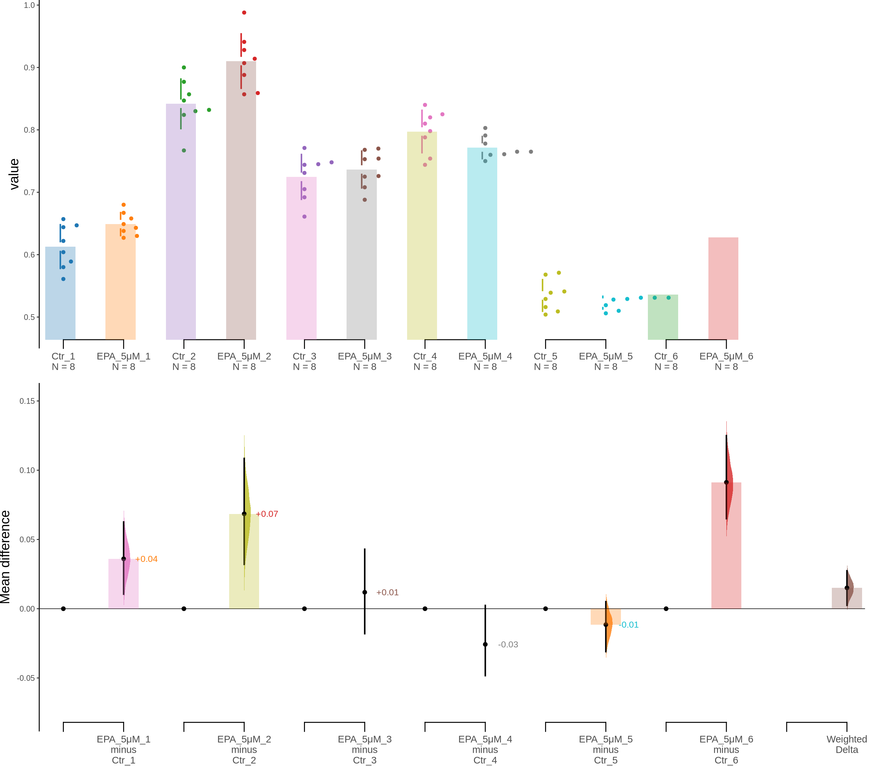

Last updated: 2024-03-20
Checks: 6 1
Knit directory: Cinquina_2024/
This reproducible R Markdown analysis was created with workflowr (version 1.7.1). The Checks tab describes the reproducibility checks that were applied when the results were created. The Past versions tab lists the development history.
The R Markdown is untracked by Git. To know which version of the R
Markdown file created these results, you’ll want to first commit it to
the Git repo. If you’re still working on the analysis, you can ignore
this warning. When you’re finished, you can run
wflow_publish to commit the R Markdown file and build the
HTML.
Great job! The global environment was empty. Objects defined in the global environment can affect the analysis in your R Markdown file in unknown ways. For reproduciblity it’s best to always run the code in an empty environment.
The command set.seed(20240320) was run prior to running
the code in the R Markdown file. Setting a seed ensures that any results
that rely on randomness, e.g. subsampling or permutations, are
reproducible.
Great job! Recording the operating system, R version, and package versions is critical for reproducibility.
Nice! There were no cached chunks for this analysis, so you can be confident that you successfully produced the results during this run.
Great job! Using relative paths to the files within your workflowr project makes it easier to run your code on other machines.
Great! You are using Git for version control. Tracking code development and connecting the code version to the results is critical for reproducibility.
The results in this page were generated with repository version fbebf81. See the Past versions tab to see a history of the changes made to the R Markdown and HTML files.
Note that you need to be careful to ensure that all relevant files for
the analysis have been committed to Git prior to generating the results
(you can use wflow_publish or
wflow_git_commit). workflowr only checks the R Markdown
file, but you know if there are other scripts or data files that it
depends on. Below is the status of the Git repository when the results
were generated:
Ignored files:
Ignored: .Rproj.user/
Untracked files:
Untracked: analysis/MTT.Rmd
Untracked: data/ASTRO_MTT_EPA.tsv
Unstaged changes:
Modified: analysis/_site.yml
Note that any generated files, e.g. HTML, png, CSS, etc., are not included in this status report because it is ok for generated content to have uncommitted changes.
There are no past versions. Publish this analysis with
wflow_publish() to start tracking its development.
df <- read_tsv(here(data_dir, "ASTRO_MTT_EPA.tsv"))
df <- df %>%
tidyr::gather(key = Group, value = Measurement)
kable(df)| Group | Measurement |
|---|---|
| Ctr_1 | 0.647 |
| Ctr_1 | 0.657 |
| Ctr_1 | 0.580 |
| Ctr_1 | 0.622 |
| Ctr_1 | 0.644 |
| Ctr_1 | 0.589 |
| Ctr_1 | 0.604 |
| Ctr_1 | 0.561 |
| EPA_5um_1 | 0.638 |
| EPA_5um_1 | 0.643 |
| EPA_5um_1 | 0.667 |
| EPA_5um_1 | 0.680 |
| EPA_5um_1 | 0.630 |
| EPA_5um_1 | 0.658 |
| EPA_5um_1 | 0.627 |
| EPA_5um_1 | 0.649 |
| EPA_10uM_1 | 0.630 |
| EPA_10uM_1 | 0.651 |
| EPA_10uM_1 | 0.669 |
| EPA_10uM_1 | 0.670 |
| EPA_10uM_1 | 0.677 |
| EPA_10uM_1 | 0.670 |
| EPA_10uM_1 | 0.737 |
| EPA_10uM_1 | 0.683 |
| EPA_30ul_1 | 0.731 |
| EPA_30ul_1 | 0.733 |
| EPA_30ul_1 | 0.797 |
| EPA_30ul_1 | 0.758 |
| EPA_30ul_1 | 0.737 |
| EPA_30ul_1 | 0.735 |
| EPA_30ul_1 | 0.510 |
| EPA_30ul_1 | 0.673 |
| Ctr_2 | 0.830 |
| Ctr_2 | 0.847 |
| Ctr_2 | 0.824 |
| Ctr_2 | 0.832 |
| Ctr_2 | 0.900 |
| Ctr_2 | 0.877 |
| Ctr_2 | 0.857 |
| Ctr_2 | 0.767 |
| EPA_5um_2 | 0.859 |
| EPA_5um_2 | 0.914 |
| EPA_5um_2 | 0.928 |
| EPA_5um_2 | 0.941 |
| EPA_5um_2 | 0.888 |
| EPA_5um_2 | 0.907 |
| EPA_5um_2 | 0.988 |
| EPA_5um_2 | 0.857 |
| EPA_10uM_2 | 0.850 |
| EPA_10uM_2 | 0.893 |
| EPA_10uM_2 | 0.880 |
| EPA_10uM_2 | 0.934 |
| EPA_10uM_2 | 0.943 |
| EPA_10uM_2 | 0.909 |
| EPA_10uM_2 | 0.898 |
| EPA_10uM_2 | 0.931 |
| EPA_30ul_2 | 0.896 |
| EPA_30ul_2 | 0.975 |
| EPA_30ul_2 | 0.919 |
| EPA_30ul_2 | 0.966 |
| EPA_30ul_2 | 0.952 |
| EPA_30ul_2 | 0.977 |
| EPA_30ul_2 | 0.974 |
| EPA_30ul_2 | 0.872 |
| Ctr_3 | 0.731 |
| Ctr_3 | 0.745 |
| Ctr_3 | 0.705 |
| Ctr_3 | 0.692 |
| Ctr_3 | 0.748 |
| Ctr_3 | 0.744 |
| Ctr_3 | 0.771 |
| Ctr_3 | 0.661 |
| EPA_5um_3 | 0.726 |
| EPA_5um_3 | 0.770 |
| EPA_5um_3 | 0.754 |
| EPA_5um_3 | 0.725 |
| EPA_5um_3 | 0.688 |
| EPA_5um_3 | 0.768 |
| EPA_5um_3 | 0.753 |
| EPA_5um_3 | 0.708 |
| EPA_10uM_3 | 0.753 |
| EPA_10uM_3 | 0.787 |
| EPA_10uM_3 | 0.782 |
| EPA_10uM_3 | 0.744 |
| EPA_10uM_3 | 0.747 |
| EPA_10uM_3 | 0.788 |
| EPA_10uM_3 | 0.748 |
| EPA_10uM_3 | 0.729 |
| EPA_30ul_3 | 0.759 |
| EPA_30ul_3 | 0.809 |
| EPA_30ul_3 | 0.790 |
| EPA_30ul_3 | 0.855 |
| EPA_30ul_3 | 0.797 |
| EPA_30ul_3 | 0.845 |
| EPA_30ul_3 | 0.842 |
| EPA_30ul_3 | 0.824 |
| Ctr_4 | 0.840 |
| Ctr_4 | 0.754 |
| Ctr_4 | 0.744 |
| Ctr_4 | 0.798 |
| Ctr_4 | 0.788 |
| Ctr_4 | 0.810 |
| Ctr_4 | 0.820 |
| Ctr_4 | 0.825 |
| EPA_5um_4 | 0.778 |
| EPA_5um_4 | 0.803 |
| EPA_5um_4 | 0.791 |
| EPA_5um_4 | 0.761 |
| EPA_5um_4 | 0.760 |
| EPA_5um_4 | 0.750 |
| EPA_5um_4 | 0.765 |
| EPA_5um_4 | 0.765 |
| EPA_10uM_4 | 0.790 |
| EPA_10uM_4 | 0.763 |
| EPA_10uM_4 | 0.833 |
| EPA_10uM_4 | 0.806 |
| EPA_10uM_4 | 0.787 |
| EPA_10uM_4 | 0.785 |
| EPA_10uM_4 | 0.790 |
| EPA_10uM_4 | 0.839 |
| EPA_30ul_4 | 0.859 |
| EPA_30ul_4 | 0.859 |
| EPA_30ul_4 | 0.881 |
| EPA_30ul_4 | 0.887 |
| EPA_30ul_4 | 0.911 |
| EPA_30ul_4 | 0.839 |
| EPA_30ul_4 | 0.916 |
| EPA_30ul_4 | 0.920 |
| Ctr_5 | 0.571 |
| Ctr_5 | 0.541 |
| Ctr_5 | 0.539 |
| Ctr_5 | 0.529 |
| Ctr_5 | 0.509 |
| Ctr_5 | 0.568 |
| Ctr_5 | 0.504 |
| Ctr_5 | 0.516 |
| EPA_5um_5 | 0.531 |
| EPA_5um_5 | 0.529 |
| EPA_5um_5 | 0.510 |
| EPA_5um_5 | 0.531 |
| EPA_5um_5 | 0.531 |
| EPA_5um_5 | 0.528 |
| EPA_5um_5 | 0.506 |
| EPA_5um_5 | 0.519 |
| EPA_10uM_5 | 0.529 |
| EPA_10uM_5 | 0.551 |
| EPA_10uM_5 | 0.552 |
| EPA_10uM_5 | 0.535 |
| EPA_10uM_5 | 0.545 |
| EPA_10uM_5 | 0.545 |
| EPA_10uM_5 | 0.515 |
| EPA_10uM_5 | 0.540 |
| EPA_30ul_5 | 0.611 |
| EPA_30ul_5 | 0.621 |
| EPA_30ul_5 | 0.706 |
| EPA_30ul_5 | 0.577 |
| EPA_30ul_5 | 0.579 |
| EPA_30ul_5 | 0.590 |
| EPA_30ul_5 | 0.560 |
| EPA_30ul_5 | 0.588 |
| Ctr_6 | 0.510 |
| Ctr_6 | 0.520 |
| Ctr_6 | 0.560 |
| Ctr_6 | 0.540 |
| Ctr_6 | 0.520 |
| Ctr_6 | 0.580 |
| Ctr_6 | 0.550 |
| Ctr_6 | 0.510 |
| EPA_5um_6 | 0.580 |
| EPA_5um_6 | 0.620 |
| EPA_5um_6 | 0.710 |
| EPA_5um_6 | 0.630 |
| EPA_5um_6 | 0.620 |
| EPA_5um_6 | 0.620 |
| EPA_5um_6 | 0.640 |
| EPA_5um_6 | 0.600 |
| EPA_10uM_6 | 0.570 |
| EPA_10uM_6 | 0.590 |
| EPA_10uM_6 | 0.610 |
| EPA_10uM_6 | 0.560 |
| EPA_10uM_6 | 0.610 |
| EPA_10uM_6 | 0.560 |
| EPA_10uM_6 | 0.580 |
| EPA_10uM_6 | 0.570 |
| EPA_30ul_6 | 0.680 |
| EPA_30ul_6 | 0.670 |
| EPA_30ul_6 | 0.650 |
| EPA_30ul_6 | 0.650 |
| EPA_30ul_6 | 0.650 |
| EPA_30ul_6 | 0.680 |
| EPA_30ul_6 | 0.680 |
| EPA_30ul_6 | 0.660 |
unpaired5 <- load(df,
x = Group, y = Measurement,
idx = list(
c("Ctr_1", "EPA_5um_1"),
c("Ctr_2", "EPA_5um_2"),
c("Ctr_3", "EPA_5um_3"),
c("Ctr_4", "EPA_5um_4"),
c("Ctr_5", "EPA_5um_5"),
c("Ctr_6", "EPA_5um_6")
),
minimeta = TRUE
)print(unpaired5)DABESTR v2023.9.12
==================
Good afternoon!
The current time is 16:30 PM on Wednesday March 20, 2024.
Effect size(s) with 95% confidence intervals will be computed for:
1. EPA_5um_1 minus Ctr_1
2. EPA_5um_2 minus Ctr_2
3. EPA_5um_3 minus Ctr_3
4. EPA_5um_4 minus Ctr_4
5. EPA_5um_5 minus Ctr_5
6. EPA_5um_6 minus Ctr_6
7. weighted delta (only for mean difference)
5000 resamples will be used to generate the effect size bootstraps.unpaired5.mean_diff <- mean_diff(unpaired5)
print(unpaired5.mean_diff)DABESTR v2023.9.12
==================
Good afternoon!
The current time is 16:30 PM on Wednesday March 20, 2024.
The unpaired mean difference between EPA_5um_1 and Ctr_1 is 0.036 [95%CI 0.011, 0.063].
The p-value of the two-sided permutation t-test is 0.0499, calculated for legacy purposes only.
The unpaired mean difference between EPA_5um_2 and Ctr_2 is 0.068 [95%CI 0.032, 0.109].
The p-value of the two-sided permutation t-test is 0.0063, calculated for legacy purposes only.
The unpaired mean difference between EPA_5um_3 and Ctr_3 is 0.012 [95%CI -0.018, 0.043].
The p-value of the two-sided permutation t-test is 0.5737, calculated for legacy purposes only.
The unpaired mean difference between EPA_5um_4 and Ctr_4 is -0.026 [95%CI -0.048, 0.002].
The p-value of the two-sided permutation t-test is 0.1559, calculated for legacy purposes only.
The unpaired mean difference between EPA_5um_5 and Ctr_5 is -0.011 [95%CI -0.031, 0.005].
The p-value of the two-sided permutation t-test is 0.4606, calculated for legacy purposes only.
The unpaired mean difference between EPA_5um_6 and Ctr_6 is 0.091 [95%CI 0.065, 0.125].
The p-value of the two-sided permutation t-test is 0.0011, calculated for legacy purposes only.
5000 bootstrap samples were taken; the confidence interval is bias-corrected and accelerated.
Any p-value reported is the probability of observing the effect size (or greater),
assuming the null hypothesis of zero difference is true.
For each p-value, 5000 reshuffles of the control and test labels were performed.unpaired5.mean_diff$boot_result# A tibble: 7 × 11
control_group test_group bootstraps nboots bca_ci_low bca_ci_high pct_ci_low
<chr> <chr> <list> <int> <dbl> <dbl> <dbl>
1 Ctr_1 EPA_5um_1 <dbl> 5000 0.0105 0.0626 0.0105
2 Ctr_2 EPA_5um_2 <dbl> 5000 0.0320 0.109 0.0315
3 Ctr_3 EPA_5um_3 <dbl> 5000 -0.0180 0.0430 -0.0182
4 Ctr_4 EPA_5um_4 <dbl> 5000 -0.0483 0.00238 -0.0495
5 Ctr_5 EPA_5um_5 <dbl> 5000 -0.0310 0.00512 -0.0300
6 Ctr_6 EPA_5um_6 <dbl> 5000 0.0650 0.125 0.0625
7 Minimeta Overa… Minimeta … <dbl> 5000 0.00243 0.0274 0.0149
# ℹ 4 more variables: pct_ci_high <dbl>, ci <dbl>, difference <dbl>,
# weight <dbl>dabest_plot(unpaired5.mean_diff)unpaired10 <- load(df,
x = Group, y = Measurement,
idx = list(
c("Ctr_1", "EPA_10uM_1"),
c("Ctr_2", "EPA_10uM_2"),
c("Ctr_3", "EPA_10uM_3"),
c("Ctr_4", "EPA_10uM_4"),
c("Ctr_5", "EPA_10uM_5"),
c("Ctr_6", "EPA_10uM_6")
),
minimeta = TRUE
)print(unpaired10)DABESTR v2023.9.12
==================
Good afternoon!
The current time is 16:30 PM on Wednesday March 20, 2024.
Effect size(s) with 95% confidence intervals will be computed for:
1. EPA_10uM_1 minus Ctr_1
2. EPA_10uM_2 minus Ctr_2
3. EPA_10uM_3 minus Ctr_3
4. EPA_10uM_4 minus Ctr_4
5. EPA_10uM_5 minus Ctr_5
6. EPA_10uM_6 minus Ctr_6
7. weighted delta (only for mean difference)
5000 resamples will be used to generate the effect size bootstraps.unpaired10.mean_diff <- mean_diff(unpaired10)
print(unpaired10.mean_diff)DABESTR v2023.9.12
==================
Good afternoon!
The current time is 16:30 PM on Wednesday March 20, 2024.
The unpaired mean difference between EPA_10uM_1 and Ctr_1 is 0.06 [95%CI 0.033, 0.093].
The p-value of the two-sided permutation t-test is 0.0038, calculated for legacy purposes only.
The unpaired mean difference between EPA_10uM_2 and Ctr_2 is 0.063 [95%CI 0.03, 0.096].
The p-value of the two-sided permutation t-test is 0.0047, calculated for legacy purposes only.
The unpaired mean difference between EPA_10uM_3 and Ctr_3 is 0.035 [95%CI 0.009, 0.064].
The p-value of the two-sided permutation t-test is 0.0517, calculated for legacy purposes only.
The unpaired mean difference between EPA_10uM_4 and Ctr_4 is 0.002 [95%CI -0.024, 0.032].
The p-value of the two-sided permutation t-test is 0.8747, calculated for legacy purposes only.
The unpaired mean difference between EPA_10uM_5 and Ctr_5 is 0.004 [95%CI -0.015, 0.021].
The p-value of the two-sided permutation t-test is 0.5280, calculated for legacy purposes only.
The unpaired mean difference between EPA_10uM_6 and Ctr_6 is 0.045 [95%CI 0.024, 0.065].
The p-value of the two-sided permutation t-test is 0.0060, calculated for legacy purposes only.
5000 bootstrap samples were taken; the confidence interval is bias-corrected and accelerated.
Any p-value reported is the probability of observing the effect size (or greater),
assuming the null hypothesis of zero difference is true.
For each p-value, 5000 reshuffles of the control and test labels were performed.unpaired10.mean_diff$boot_result# A tibble: 7 × 11
control_group test_group bootstraps nboots bca_ci_low bca_ci_high pct_ci_low
<chr> <chr> <list> <int> <dbl> <dbl> <dbl>
1 Ctr_1 EPA_10uM_1 <dbl> 5000 0.0325 0.0926 0.0316
2 Ctr_2 EPA_10uM_2 <dbl> 5000 0.0305 0.0964 0.0300
3 Ctr_3 EPA_10uM_3 <dbl> 5000 0.00925 0.0644 0.00838
4 Ctr_4 EPA_10uM_4 <dbl> 5000 -0.0242 0.0318 -0.0258
5 Ctr_5 EPA_10uM_5 <dbl> 5000 -0.0154 0.0211 -0.0144
6 Ctr_6 EPA_10uM_6 <dbl> 5000 0.0237 0.0650 0.0237
7 Minimeta Overa… Minimeta … <dbl> 5000 0.0173 0.0413 0.0289
# ℹ 4 more variables: pct_ci_high <dbl>, ci <dbl>, difference <dbl>,
# weight <dbl>dabest_plot(unpaired10.mean_diff)
unpaired30 <- load(df,
x = Group, y = Measurement,
idx = list(
c("Ctr_1", "EPA_30ul_1"),
c("Ctr_2", "EPA_30ul_2"),
c("Ctr_3", "EPA_30ul_3"),
c("Ctr_4", "EPA_30ul_4"),
c("Ctr_5", "EPA_30ul_5"),
c("Ctr_6", "EPA_30ul_6")
),
minimeta = TRUE
)print(unpaired30)DABESTR v2023.9.12
==================
Good afternoon!
The current time is 16:30 PM on Wednesday March 20, 2024.
Effect size(s) with 95% confidence intervals will be computed for:
1. EPA_30ul_1 minus Ctr_1
2. EPA_30ul_2 minus Ctr_2
3. EPA_30ul_3 minus Ctr_3
4. EPA_30ul_4 minus Ctr_4
5. EPA_30ul_5 minus Ctr_5
6. EPA_30ul_6 minus Ctr_6
7. weighted delta (only for mean difference)
5000 resamples will be used to generate the effect size bootstraps.unpaired30.mean_diff <- mean_diff(unpaired30)
print(unpaired30.mean_diff)DABESTR v2023.9.12
==================
Good afternoon!
The current time is 16:30 PM on Wednesday March 20, 2024.
The unpaired mean difference between EPA_30ul_1 and Ctr_1 is 0.096 [95%CI 0.007, 0.14].
The p-value of the two-sided permutation t-test is 0.0104, calculated for legacy purposes only.
The unpaired mean difference between EPA_30ul_2 and Ctr_2 is 0.1 [95%CI 0.061, 0.136].
The p-value of the two-sided permutation t-test is 0.0011, calculated for legacy purposes only.
The unpaired mean difference between EPA_30ul_3 and Ctr_3 is 0.091 [95%CI 0.059, 0.123].
The p-value of the two-sided permutation t-test is 0.0003, calculated for legacy purposes only.
The unpaired mean difference between EPA_30ul_4 and Ctr_4 is 0.087 [95%CI 0.057, 0.117].
The p-value of the two-sided permutation t-test is 0.0013, calculated for legacy purposes only.
The unpaired mean difference between EPA_30ul_5 and Ctr_5 is 0.069 [95%CI 0.043, 0.116].
The p-value of the two-sided permutation t-test is 0.0006, calculated for legacy purposes only.
The unpaired mean difference between EPA_30ul_6 and Ctr_6 is 0.129 [95%CI 0.108, 0.145].
The p-value of the two-sided permutation t-test is 0.0009, calculated for legacy purposes only.
5000 bootstrap samples were taken; the confidence interval is bias-corrected and accelerated.
Any p-value reported is the probability of observing the effect size (or greater),
assuming the null hypothesis of zero difference is true.
For each p-value, 5000 reshuffles of the control and test labels were performed.unpaired30.mean_diff$boot_result# A tibble: 7 × 11
control_group test_group bootstraps nboots bca_ci_low bca_ci_high pct_ci_low
<chr> <chr> <list> <int> <dbl> <dbl> <dbl>
1 Ctr_1 EPA_30ul_1 <dbl> 5000 0.00707 0.140 0.0289
2 Ctr_2 EPA_30ul_2 <dbl> 5000 0.0610 0.136 0.0619
3 Ctr_3 EPA_30ul_3 <dbl> 5000 0.0587 0.123 0.0585
4 Ctr_4 EPA_30ul_4 <dbl> 5000 0.0574 0.117 0.0570
5 Ctr_5 EPA_30ul_5 <dbl> 5000 0.0426 0.116 0.0385
6 Ctr_6 EPA_30ul_6 <dbl> 5000 0.108 0.145 0.109
7 Minimeta Overa… Minimeta … <dbl> 5000 0.0922 0.115 0.104
# ℹ 4 more variables: pct_ci_high <dbl>, ci <dbl>, difference <dbl>,
# weight <dbl>dabest_plot(unpaired30.mean_diff)
sessionInfo()R version 4.3.1 (2023-06-16)
Platform: aarch64-apple-darwin20 (64-bit)
Running under: macOS Sonoma 14.4
Matrix products: default
BLAS: /Library/Frameworks/R.framework/Versions/4.3-arm64/Resources/lib/libRblas.0.dylib
LAPACK: /Library/Frameworks/R.framework/Versions/4.3-arm64/Resources/lib/libRlapack.dylib; LAPACK version 3.11.0
locale:
[1] en_US.UTF-8/en_US.UTF-8/en_US.UTF-8/C/en_US.UTF-8/en_US.UTF-8
time zone: Europe/Vienna
tzcode source: internal
attached base packages:
[1] stats graphics grDevices utils datasets methods base
other attached packages:
[1] skimr_2.1.5 magrittr_2.0.3 lubridate_1.9.3
[4] forcats_1.0.0 stringr_1.5.1 dplyr_1.1.4
[7] purrr_1.0.2 readr_2.1.5 tidyr_1.3.1
[10] tibble_3.2.1 ggplot2_3.5.0 tidyverse_2.0.0.9000
[13] dabestr_2023.9.12 RColorBrewer_1.1-3 knitr_1.45
[16] here_1.0.1 workflowr_1.7.1
loaded via a namespace (and not attached):
[1] beeswarm_0.4.0 gtable_0.3.4 xfun_0.42 bslib_0.6.1
[5] processx_3.8.3 callr_3.7.5 tzdb_0.4.0 vctrs_0.6.5
[9] tools_4.3.1 ps_1.7.6 generics_0.1.3 parallel_4.3.1
[13] fansi_1.0.6 highr_0.10 pkgconfig_2.0.3 lifecycle_1.0.4
[17] farver_2.1.1 compiler_4.3.1 git2r_0.33.0 munsell_0.5.0
[21] ggsci_3.0.1 repr_1.1.6 getPass_0.2-4 vipor_0.4.7
[25] httpuv_1.6.14 htmltools_0.5.7 sass_0.4.8 yaml_2.3.8
[29] crayon_1.5.2 later_1.3.2 pillar_1.9.0 jquerylib_0.1.4
[33] whisker_0.4.1 ggmin_0.0.0.9000 cachem_1.0.8 boot_1.3-30
[37] tidyselect_1.2.1 digest_0.6.35 stringi_1.8.3 labeling_0.4.3
[41] cowplot_1.1.3 rprojroot_2.0.4 fastmap_1.1.1 grid_4.3.1
[45] colorspace_2.1-0 cli_3.6.2 base64enc_0.1-3 utf8_1.2.4
[49] withr_3.0.0 scales_1.3.0 promises_1.2.1 bit64_4.0.5
[53] ggbeeswarm_0.7.2 timechange_0.3.0 rmarkdown_2.26 httr_1.4.7
[57] bit_4.0.5 hms_1.1.3 evaluate_0.23 rlang_1.1.3
[61] Rcpp_1.0.12 glue_1.7.0 rstudioapi_0.15.0 vroom_1.6.5
[65] jsonlite_1.8.8 R6_2.5.1 fs_1.6.3